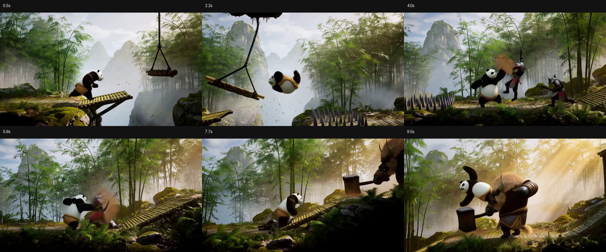
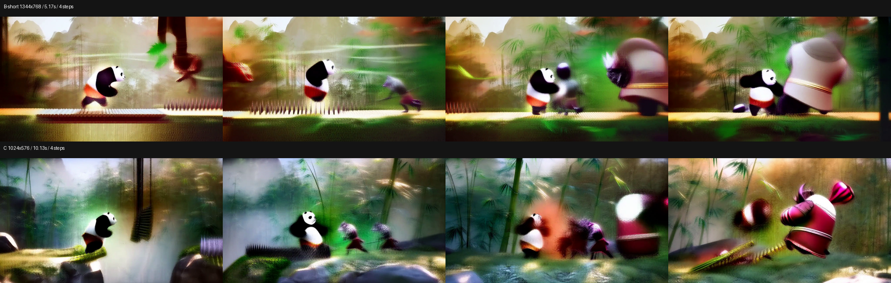

A
B-short / 4 steps
1344×768 / 124 frames / 5.167 sec
Track A failed to load. Open MP4.
A complete, decodable result produced locally on an RTX 4060 Laptop 8GB — not the absolute hardware limit.
Align by progress or clock time to compare narrative, clarity, and stability directly.
1344×768 / 124 frames / 5.167 sec
Track A failed to load. Open MP4.
1024×576 / 243 frames / 10.125 sec
Track B failed to load. Open MP4.
Reading video metadata…
This laptop cannot maximize resolution, duration, and sampling steps at the same time. Each practical target below has a result you can inspect.
The strongest verified balance of ten-second narrative, motion, and final detail.
Use the higher 1344×768 frame when a five-second shot is enough.
Use the full ten seconds to validate shot rhythm before spending on sampling.
Check composition, motion direction, and workflow connectivity first.
All five videos and two contact sheets retain their original files. The viewer fits media to the window by default and can switch to native 1:1 pixels.

Final resultFinal C tier / 20 steps1024×576 / 243 frames / 10.125 sec / 2762.89 sec local generation Play video
Length priorityC tier / 4 steps1024×576 / 243 frames / 10.125 sec / 650.96 sec local generation Play video Resolution priorityB-short / 4 steps1344×768 / 124 frames / 5.167 sec / 537.49 sec local generation Play video Fast preflightC tier preflight / 1 step1024×576 / 243 frames / 10.125 sec / generation time not recorded Play video Fast preflightB-short preflight / 1 step1344×768 / 124 frames / 5.167 sec / generation time not recorded Play video Frame comparisonB-short and C / 4-step contact sheet1920×612 View image Final resultFinal 20-step timeline1536×640 View imageWith the same model and seed, spatial pixels and temporal frames decide whether a run can start; sampling steps mainly change generation time and detail.
| Experiment | Resolution | Frames & duration | Steps | Result | Key observation |
|---|---|---|---|---|---|
| A upper bound | 1344×768 | 362 / 15.08s | 1 | OOM | A single QKV allocation requested 4.38 GiB; 8GB VRAM could not contain it |
| B-long | 1344×768 | 243 / 10.13s | 1 | Stalled | Process private memory reached about 27.8 GiB and unloading stopped progressing |
| B-short | 1344×768 | 124 / 5.17s | 4 | Success | 537.49 sec; highest verified resolution |
| C balanced | 1024×576 | 243 / 10.13s | 4 | Success | 650.96 sec; complete four-beat action narrative |
| Final result | 1024×576 | 243 / 10.13s | 20 | Recommended | 2762.89 sec; every media integrity check passed |
More steps increase runtime but barely change peak VRAM. The real threshold is the activation scale created by spatial pixels and temporal frames.
At 1344×768 and 362 frames, one attention QKV allocation exceeds the remaining VRAM.
At 1344×768 and 243 frames, sampling begins but model unloading cannot keep progressing.
At 1024×576 and 243 frames, enough margin remains to finish both VAEs and muxing.
Four steps are enough to judge composition and action. Twenty steps visibly improve character edges, trap detail, and boss form.
The final file was read frame by frame for video and audio, with queue, history, encoding, and content statistics checked independently.
H.264 / yuv420p / 24fps
AAC / 32kHz / Stereo
Mean adjacent-frame change; not black or frozen
End-to-end local RTX 4060 Laptop run
BA978D87ECAD4DDF5A099FF842AA1E487FDF55D97F7E7C1051F4969ABF5856D5The video node graph keeps the same seed and sampling path while changing only resolution, frame count, and steps.
--fast-disk --reserve-vram 2minimax_h3_fl2va_pruned_int8_convrot.safetensorsqwen3vl_32b_minimax_h3_nvfp4_awq.safetensorsminimax_h3_video_vae_fp16.safetensorsminimax_h3_audio_vae_fp32.safetensorsHigh-end Unreal Engine 5 gameplay footage of a 3D side-scrolling action platform game starring a heroic chubby black-and-white kung fu panda warrior. One continuous side-view tracking shot through a lush ancient Chinese bamboo mountain valley. Detailed fur simulation, physically based materials, global illumination, volumetric sunlight, mist, flying bamboo leaves, polished AAA game graphics, expressive animation, powerful readable combat impacts.
Timeline:
[0s-2s] The panda sprints left to right on a mossy stone path and leaps across a broken bridge over a misty ravine.
[2s-4s] He rolls under a swinging wooden trap, jumps over spikes and lands in a kung fu stance.
[4s-7s] Armored wolf soldiers attack; he blocks, punches, palm-strikes and kicks them away with dust and leaf impact effects.
[7s-10s] A large armored yak boss swings a hammer; the panda dodges, runs up a bamboo ramp and defeats it with a slow-motion spinning flying kick in golden sunset light.
Camera: strict 2.5D side view, smooth horizontal tracking at constant distance, one uninterrupted take, no cuts, no zoom, no orbit, no first-person view. No HUD, menu, subtitles, captions, logos, watermark, written text, live action, extra limbs or deformed anatomy.
Audio: synchronized footsteps, cloth movement, bamboo forest wind, bridge creaks, landing impacts, trap whooshes, crisp kung fu punches and kicks, armor hits, a deep boss hammer impact, restrained cinematic Chinese drums and low strings. No dialogue, narration or vocals.{kind=link}
{kind=link}